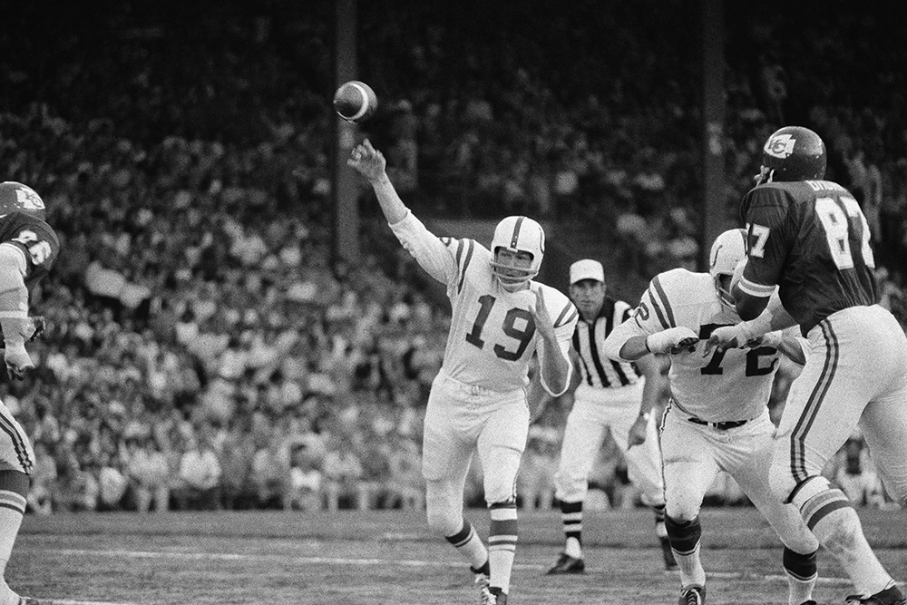
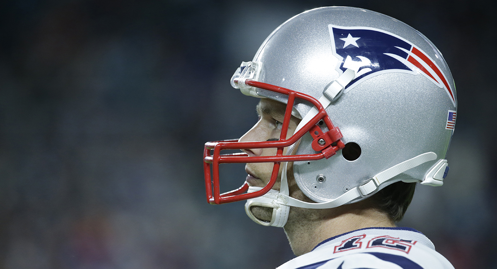
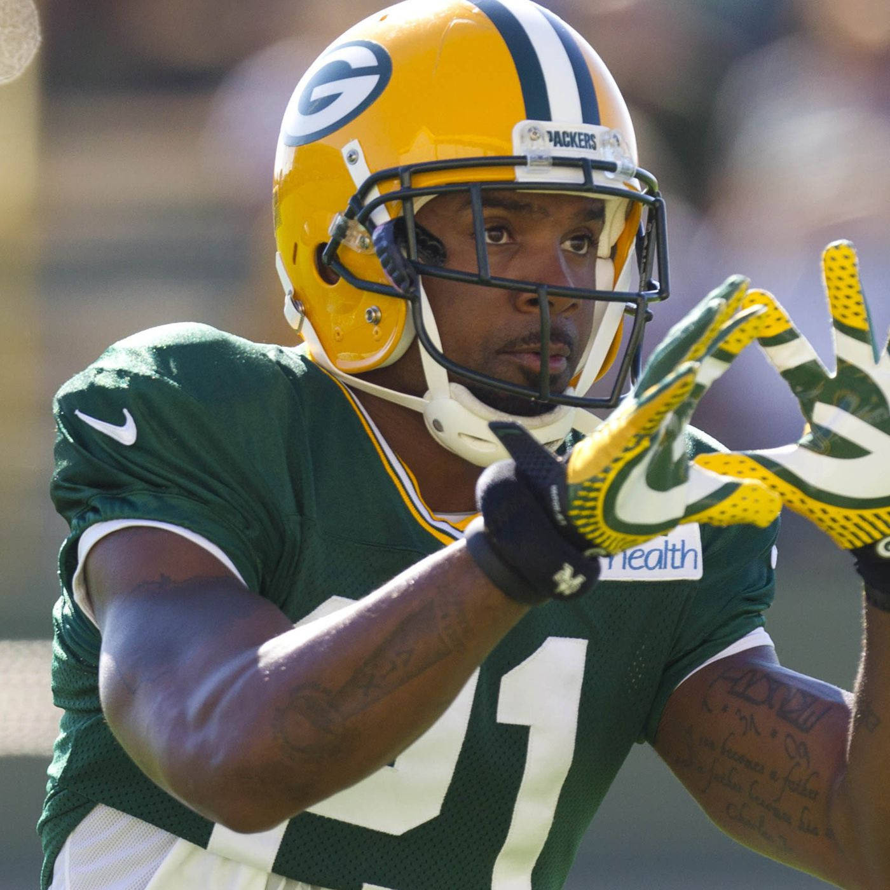
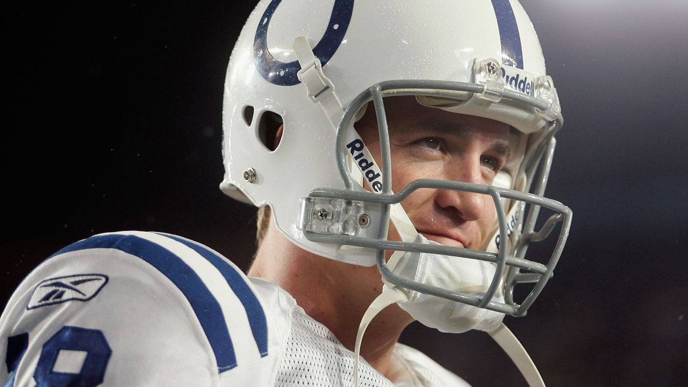
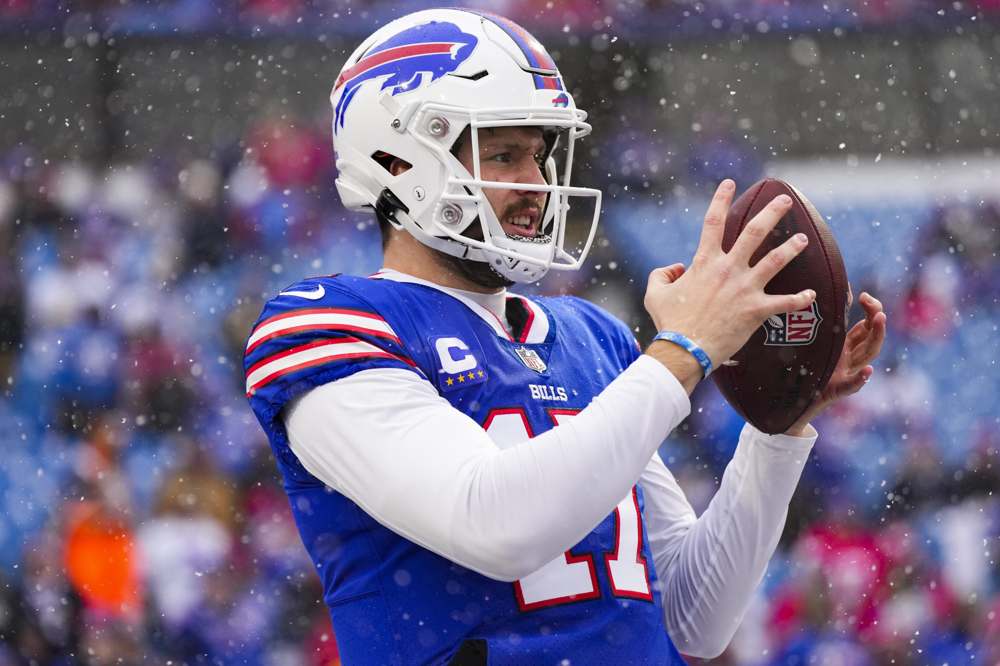
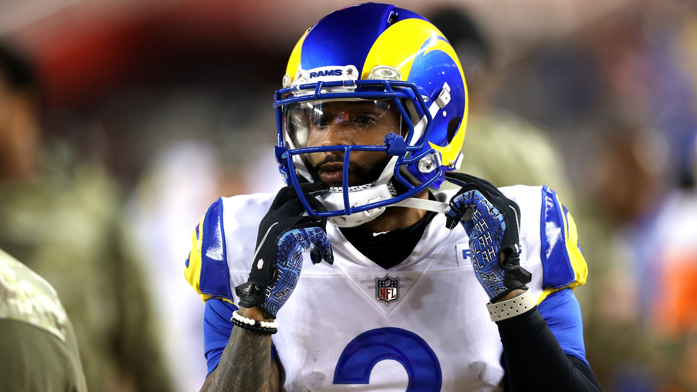
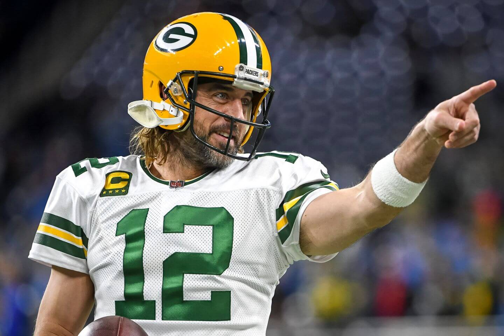
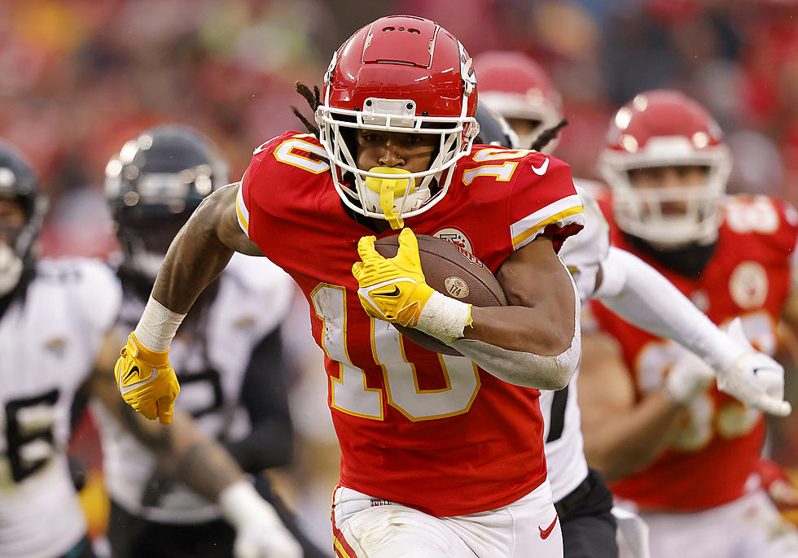
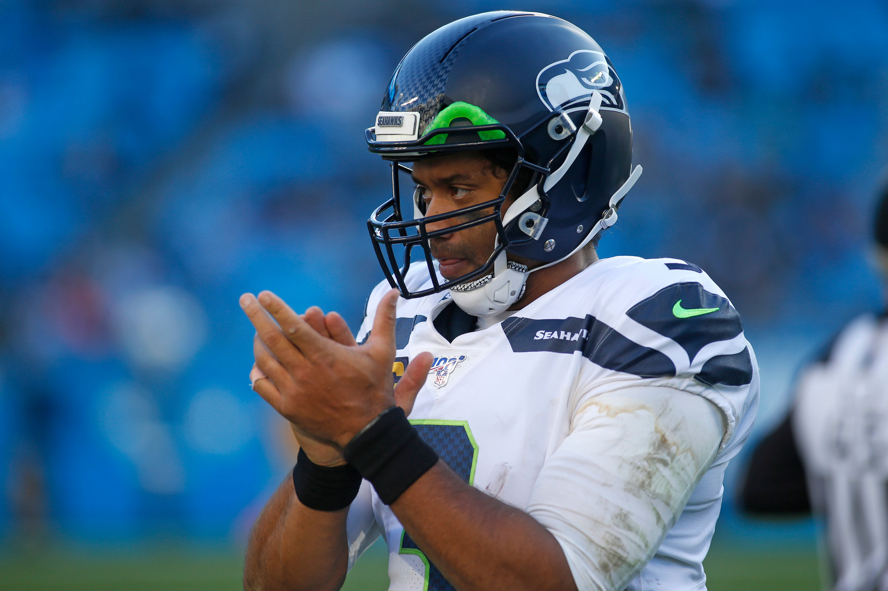
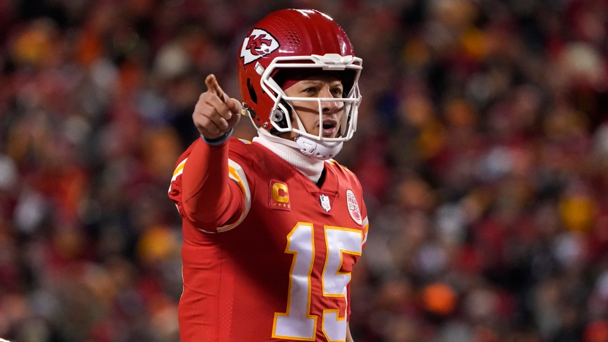

Past Helmets
Coinciding with Pro Football's rise to national prominence in the 1960's, the players' helmets also rose to a place of prominence within the consciousness of fans. The adoption of facemasks and widespread helmet logos turned the helmets from mere proctective equipment to instantly recognizable symbols for the sport and its teams. The blueprint for the decades to come was laid down in the '60s, as Riddell's TK (short for Tru-Curve) model set the standardwith its round ear hole, simple facemask, and two-point softcup chinstrap. Numerous models improved upon the idea over the next four decades, but none strayed too far from the original example. Partially inflatble padding replaced the suspension lining, four point chinstraps and front and back bumpers were introduced, and facemasks evolved to be clipped onto the helmet rather than bolted. It wasn't until the new century when new engineering practices and a badly-needed emphasis on player safety led to the introduction of the Ridell Revolution in 2002. By the 2010's, the majority of players were wearing a newer style helmet. In 2018, the NFL hammered the final nail into the coffin, as they banned the Riddell VSR-4 and Schutt Air Advantage. The helmets in this category have gone the way of the dodo for good reason, but the game is sorely missing their style and simplicity.
Examples of Past Helmets
- Riddell TK
 - Riddell VSR-4 
- Schutt Air Advantage 
- Riddell Revolution 
Current Helmets
The new way of thinking that the Riddell Revolution brought into the 21st century was slow at first, but quickly took over the game as we know it. Improvements in safety, comfort, and aesthetics brought about a dizzying array of helmet choices for players. Innovation championed, as 2002's Revolution gave way to 2010's Revo Speed (later just Speed), which in turn gave way to 2016's SpeedFlex. Schutt's Air XP combined old-school looks with new-school safety to appease older players like four-time MVP Aaron Rodgers, but the company also went the other way with the F7 and its techtonic plate design. New blood has entered the space too, as Vicis's deformable outer shell has taken helmet safety to new levels. The game has a new look with the new amount of helmet choices available to players now, which elevates both the safety and the style of the game to new levels.
Examples of Current Helmets
- Riddell SpeedFlex
 - Riddell Speed 
- Schutt Air XP 
- Schutt F7 
- Vicis Zero1 
- Vicis Zero2 